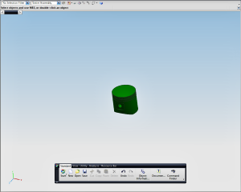

全屏显示
使用全屏显示 能够将 NX 主窗口切换至最大可视状态。全屏显示在为他人,比如经理或者消费者展示材料时特别有用。部件或模型是中心焦点，而其它 NX 用户界面的元素位于背景中。
能够将 NX 主窗口切换至最大可视状态。全屏显示在为他人,比如经理或者消费者展示材料时特别有用。部件或模型是中心焦点，而其它 NX 用户界面的元素位于背景中。

全屏可以用两种方法显示：
-
整个桌面 – NX 窗口将占满整个屏幕，菜单栏、工具条、资源条以及选择条交替使用，在图形窗口中给予您更大的空间。
-
最大化窗口 – NX 主窗口显示为最大化窗口
要改变显示，选择首选项→用户界面，在打开的对话框中点击布局选项卡。
退出全屏模式
要退出全屏模式，点击右上角的，或者按 Alt+Enter 键。
位于何处？
|
工具条 |
状态行右侧的 |
|
菜单 |
视图→全屏 |
|
快捷菜单 |
按 Alt+Enter (开始或退出全屏模式) |